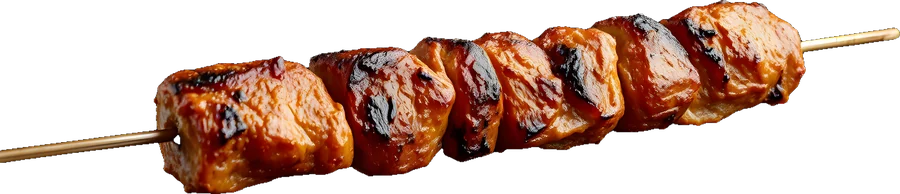
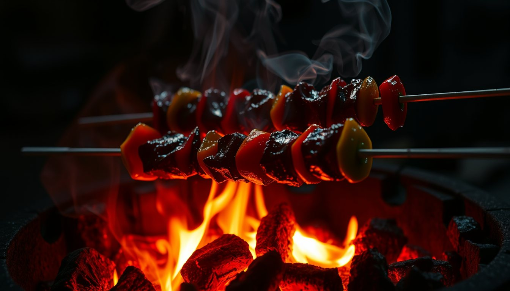
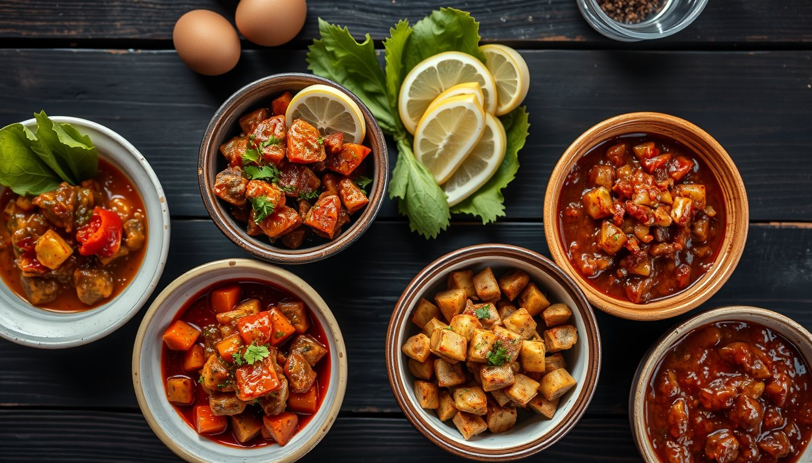
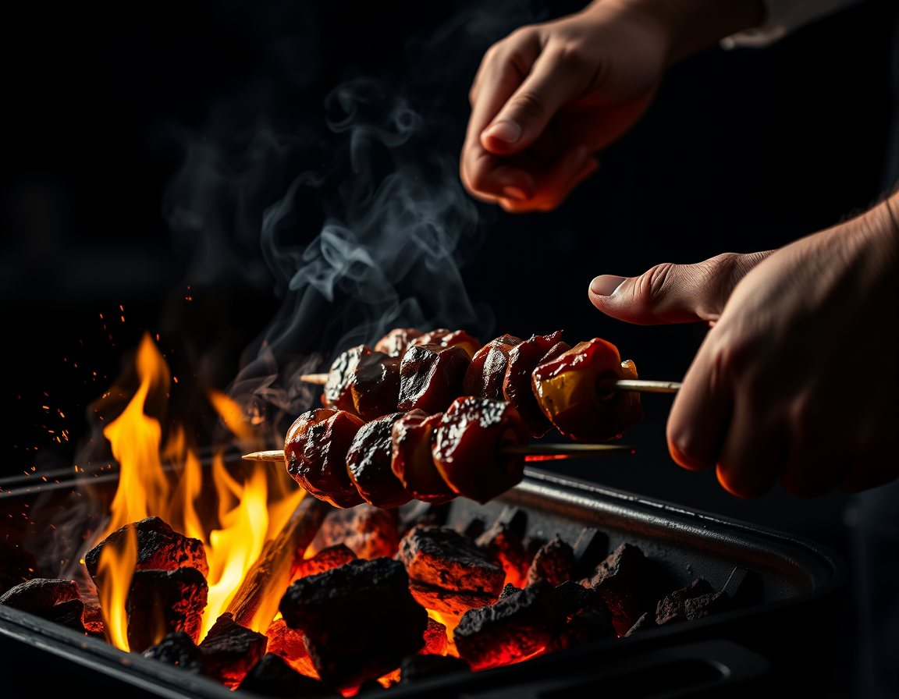

Meşe kömürü, zırhta çekilmiş kuzu ve 40 yıllık ustalık. Ocağın başına oturun, gerisini ateş anlatsın.




“Kebabı ateş değil, sabır pişirir. Közü bekle, şişi acele ettirme.”
— İbrahim Usta, 1985'ten beri ocak başında
Merkezefendi ve Pamukkale içinde, közden çıktıktan 25 dakika sonra.